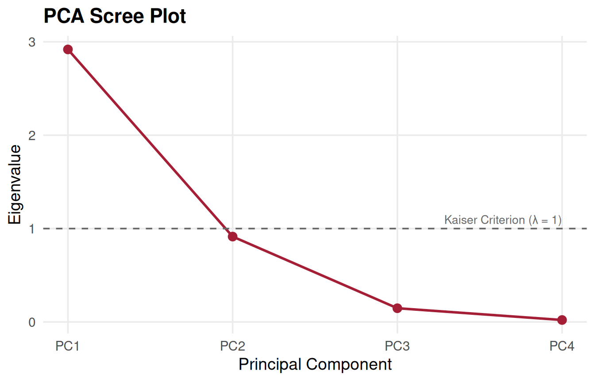
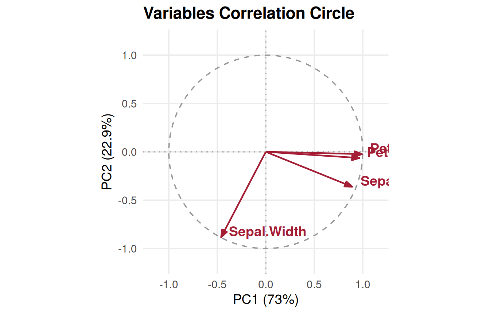
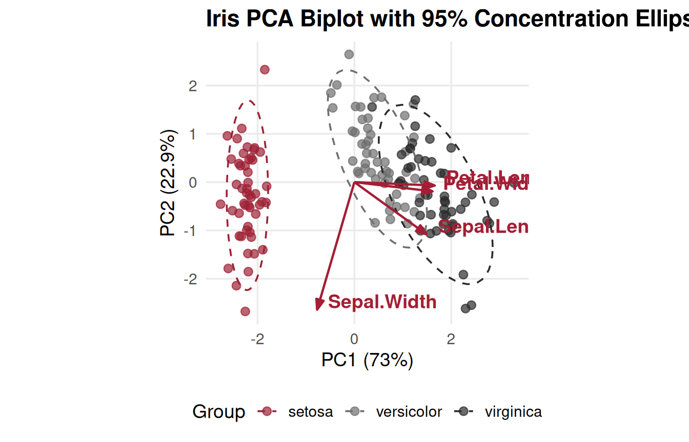
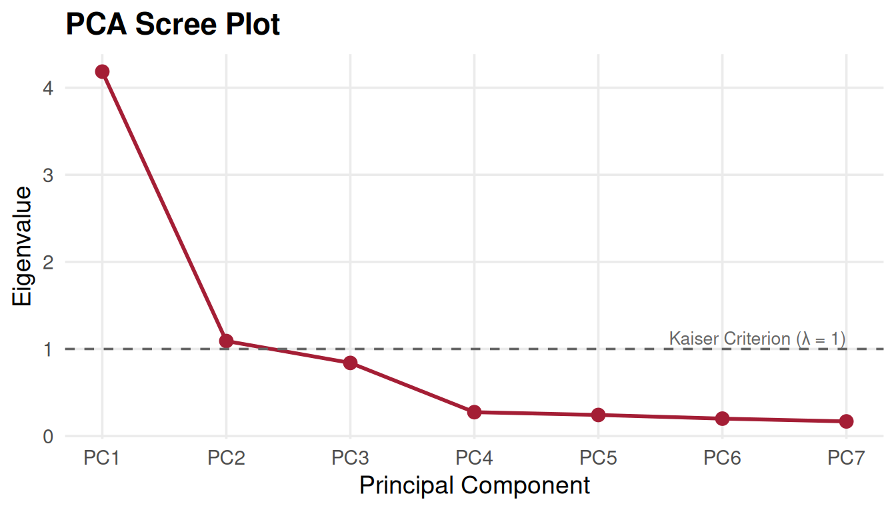
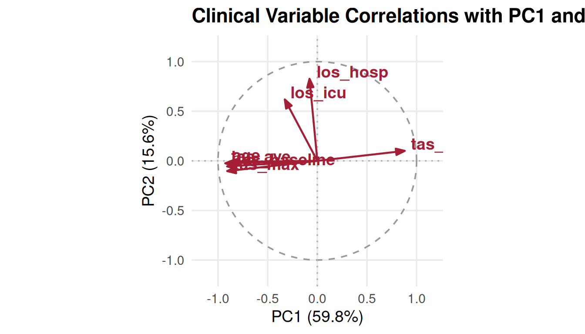

07. Principal Component Analysis in R and SAS
Darina Chudnovskaya
Source:vignettes/pca_analysis.Rmd
pca_analysis.RmdAuthor: Darina Chudnovskaya (
darina.c@temple.edu,tub51812@temple.edu)
Reviewers:@tub51812@temple.edu, J. Kyle Armstrong (tus75918@temple.edu,@jkylearmstrong-temple)
Affiliation: Lewis Katz School of Medicine at Temple University, Center for Biostatistics & Epidemiology
Introduction: Dimension Reduction in Clinical and Exploratory Data Analysis
Principal Component Analysis (PCA) is an unsupervised machine learning and exploratory data analysis (EDA) technique widely utilized across biostatistics, clinical trials, and epidemiological research. When analyzing large cohorts with extensive clinical measurements—such as repeated physiological scores, biomarker panels, and intensive care metrics—investigators often face high dimensionality and severe multicollinearity.
As summarized by biostatistician Darina Chudnovskaya:
“To put all this simply, just think of principal components as new axes that provide the best angle to see and evaluate the data, so that the differences between the observations are better visible.”
— Darina Chudnovskaya (citing builtin.com)
PCA reduces the dimensionality of multivariate continuous datasets by transforming correlated variables into a smaller set of uncorrelated, orthogonal variables known as Principal Components (PCs). Each principal component is a linear combination of the original variables, structured such that: 1. The first principal component () captures the maximum possible variance in the data. 2. Each subsequent component () captures the maximum possible remaining variance under the mathematical constraint that it is orthogonal (uncorrelated) to all preceding components. 3. The total variance across all principal components equals the total variance of the original variables.
While principal components themselves are linear combinations and may
not have a single physical unit of measurement, analyzing their
loadings (eigenvectors) and
eigenvalues reveals underlying data structures, detects
clustering, and helps researchers select representative covariates for
downstream multivariable survival modeling (such as
cbe_cox_multi()).
The 5-Step PCA Mathematical Workflow
The mathematical execution of PCA proceeds through five fundamental steps:
┌─────────────────────────────────────────────────────────────┐
│ 1. Standardize Continuous Variables (z-score scaling) │
└──────────────────────────────┬──────────────────────────────┘
▼
┌─────────────────────────────────────────────────────────────┐
│ 2. Compute Covariance / Correlation Matrix (Σ or R) │
└──────────────────────────────┬──────────────────────────────┘
▼
┌─────────────────────────────────────────────────────────────┐
│ 3. Compute Eigenvalues & Eigenvectors (Σ v = λ v) │
└──────────────────────────────┬──────────────────────────────┘
▼
┌─────────────────────────────────────────────────────────────┐
│ 4. Retain Significant PCs (Kaiser Criterion & Scree Plot) │
└──────────────────────────────┬──────────────────────────────┘
▼
┌─────────────────────────────────────────────────────────────┐
│ 5. Project Data onto Principal Axes (Feature Matrix X V) │
└─────────────────────────────────────────────────────────────┘Standardize Variables: Because PCA is sensitive to measurement scales (variables with larger numerical ranges would spuriously dominate the variance), features are centered to mean zero () and scaled to unit variance (): Standardizing is mathematically equivalent to performing PCA on the correlation matrix rather than the unscaled covariance matrix .
Calculate Correlation / Covariance Matrix: A symmetric correlation matrix is computed, capturing all pairwise linear relationships and correlation directions ( to ).
-
Calculate Eigenvalues and Eigenvectors: Eigen-decomposition solves the characteristic equation:
- Eigenvalues (): Represent the variance explained by the -th principal component. In standardized PCA with variables, .
- Eigenvectors (): Unit-length directional vectors defining the principal axes (loadings).
-
Select Principal Components:
- Kaiser-Guttman Criterion: Retain components with eigenvalues (explaining more variance than an individual original standardized variable).
- Scree Plot Elbow: Identify the inflection point where additional components yield diminishing marginal variance.
- Cumulative Variance Threshold: Retain enough components to explain a pre-specified proportion of variance (typically 70%–80%).
Recast Observations onto Principal Component Axes: Observations are projected onto the retained eigenvectors to generate principal component scores:
SAS and R Equivalence: The Iris Benchmark
To validate numerical equivalence between SAS
PROC PRINCOMP and TempleCBE::proc_pca(), we
evaluate Fisher’s Iris dataset (150 observations across 4 morphometric
variables: Sepal.Length, Sepal.Width,
Petal.Length, Petal.Width).
SAS PROC PRINCOMP Implementation
In SAS, principal component analysis on standardized variables is
invoked using PROC PRINCOMP:
/* SAS PROC PRINCOMP Benchmark */
proc princomp data=sashelp.iris out=iris_pca plots=all;
var SepalLength SepalWidth PetalLength PetalWidth;
run;TempleCBE proc_pca Implementation
In R using TempleCBE, the equivalent workflow is
executed via proc_pca():
# Execute standardized PCA with TempleCBE
iris_pca <- proc_pca(iris, scale = TRUE)
iris_pca
#> # A tibble: 4 × 6
#> component eigenvalue difference proportion variance_pct cum_variance_pct
#> <chr> <dbl> <dbl> <dbl> <dbl> <dbl>
#> 1 PC1 2.92 2.00 0.730 73.0 73.0
#> 2 PC2 0.914 0.767 0.229 22.9 95.8
#> 3 PC3 0.147 0.126 0.0367 3.67 99.5
#> 4 PC4 0.0207 NA 0.00518 0.518 100Numerical Concordance: SAS vs. TempleCBE
TempleCBE::proc_pca() mirrors the exact output table
produced by SAS PROC PRINCOMP:
| Principal Component | Eigenvalue () | Difference | Proportion of Variance | Cumulative Variance |
|---|---|---|---|---|
| PC1 | 2.9185 | 2.0045 | 72.96% | 72.96% |
| PC2 | 0.9140 | 0.7673 | 22.85% | 95.81% |
| PC3 | 0.1468 | 0.1261 | 3.67% | 99.48% |
| PC4 | 0.0207 | — | 0.52% | 100.00% |
Notice that the first two principal components capture 95.81% of the total variance in the Iris dataset, allowing a 4-dimensional feature space to be represented in two dimensions with negligible loss of information.
Visualizing PCA: Scree Plots, Biplots, and Correlation Circles
TempleCBE provides comprehensive visualization functions
adhering to institutional design standards.
1. Scree Plot with Kaiser-Guttman Threshold
The scree plot displays eigenvalues across components, highlighting the Kaiser criterion:
pca_scree_plot(iris_pca, metric = "eigenvalue", kaiser = TRUE)
Scree plot with Kaiser criterion threshold.
Only exceeds the Kaiser threshold (), while () is near the threshold and brings cumulative explained variance to 95.8%.
2. Variable Correlation Circle
The correlation circle illustrates how each original variable correlates with and on the unit circle:
pca_variables_plot(iris_pca, x = 1, y = 2)
Variable correlation circle on the unit circle.
Interpretation: - Petal.Length,
Petal.Width, and Sepal.Length exhibit strong
positive correlations with
(vectors extending to the right). - Sepal.Width is nearly
orthogonal to the petal dimensions and projects predominantly along
(vector extending upward).
3. Loadings Biplot with 95% Concentration Ellipses
The biplot projects individual observations along with variable loading vectors, with optional grouping and 95% confidence/concentration ellipses:
pca_biplot(iris_pca, group = iris$Species, ellipse = TRUE, percent = TRUE, title = "Iris PCA Biplot with 95% Concentration Ellipses")
PCA biplot showing observation scores, variable vectors, and species clusters.
The biplot demonstrates complete separation of Iris setosa along , driven by smaller petal dimensions and broader sepal width.
Clinical Application: Dimensionality Reduction for Survival Analysis
In clinical observational studies, researchers frequently collect
multiple correlated physiological and procedural measurements. For
example, consider an ICU cohort with 165 patients tracking: -
Temperature Alteration Scores (TAS):
tas_baseline, tas_min, tas_max,
tas_ave - Demographics: age -
Hospital Course: los_icu (ICU length of
stay), los_hosp (hospital length of stay)
Simulating a Clinical Cohort
set.seed(42)
n <- 165
# Latent physiological severity and hospital course
severity <- rnorm(n, 0, 1)
exposure <- 0.6 * severity + rnorm(n, 0, 0.8)
clinical_data <- tibble(
age = round(60 + 8 * severity + rnorm(n, 0, 5)),
tas_baseline = round(37.5 + 0.8 * severity + rnorm(n, 0, 0.4), 1),
tas_min = round(35.5 - 0.5 * severity + rnorm(n, 0, 0.3), 1),
tas_max = round(38.8 + 1.1 * severity + rnorm(n, 0, 0.5), 1),
tas_ave = round(37.2 + 0.7 * severity + rnorm(n, 0, 0.3), 1),
los_icu = pmax(1, round(5 + 3 * exposure + rexp(n, 0.2))),
los_hosp = pmax(2, round(12 + 5 * exposure + rexp(n, 0.1)))
)
head(clinical_data)
#> # A tibble: 6 × 7
#> age tas_baseline tas_min tas_max tas_ave los_icu los_hosp
#> <dbl> <dbl> <dbl> <dbl> <dbl> <dbl> <dbl>
#> 1 75 38.9 34.6 40.7 38.4 12 23
#> 2 53 37.4 36.2 37.7 36.6 5 36
#> 3 59 37.3 35.3 38.2 37.3 8 20
#> 4 66 38.1 35.4 39.5 38 16 15
#> 5 68 37.8 35.8 39.2 37.8 19 24
#> 6 59 37.8 35.6 38.7 37.3 11 53Performing Clinical PCA
clin_pca <- proc_pca(clinical_data, scale = TRUE)
clin_pca
#> # A tibble: 7 × 6
#> component eigenvalue difference proportion variance_pct cum_variance_pct
#> <chr> <dbl> <dbl> <dbl> <dbl> <dbl>
#> 1 PC1 4.19 3.09 0.598 59.8 59.8
#> 2 PC2 1.09 0.251 0.156 15.6 75.4
#> 3 PC3 0.840 0.565 0.120 12.0 87.4
#> 4 PC4 0.274 0.0322 0.0392 3.92 91.3
#> 5 PC5 0.242 0.0421 0.0346 3.46 94.7
#> 6 PC6 0.200 0.0321 0.0286 2.86 97.6
#> 7 PC7 0.168 NA 0.0240 2.40 100Clinical Scree Plot and Factor Interpretation
pca_scree_plot(clin_pca)
pca_variables_plot(clin_pca, title = "Clinical Variable Correlations with PC1 and PC2")
Examining Variable Loadings (Eigenvectors)
rotation_matrix(attr(clin_pca, "prcomp"))[, c("feature", "PC1", "PC2", "PC3")]
#> # A tibble: 7 × 4
#> feature PC1 PC2 PC3
#> <chr> <dbl> <dbl> <dbl>
#> 1 age -0.433 -0.0113 0.0179
#> 2 tas_baseline -0.444 -0.0538 -0.0675
#> 3 tas_min 0.430 0.0962 0.157
#> 4 tas_max -0.444 -0.0993 -0.0301
#> 5 tas_ave -0.453 -0.0241 0.00513
#> 6 los_icu -0.160 0.592 0.775
#> 7 los_hosp -0.0384 0.792 -0.607Connecting PCA to Multivariable Cox Survival Modeling
In Darina Chudnovskaya’s applied research, univariable Cox regression
showed that physiological indicators (tas_baseline,
tas_min, tas_max, tas_ave,
age) were statistically significant predictors of survival,
whereas length of stay metrics (los_icu,
los_hosp) primarily reflected post-admission hospital
course:
-
Collinearity Identification:
tas_min,tas_max, andtas_avecluster tightly in loading space. Entering all three simultaneously into a multivariable Cox model (cbe_cox_multi()) inflates variance and causes coefficient instability. - Dimension Separation: PCA isolates the hospital stay duration axis () from acute physiological thermal volatility ( and ).
-
Model Selection Guidance: In conjunction with
univariable tables (
cbe_cox_single()) and baseline summaries (my_summary_table()), PCA provides empirical justification for retaining a single representative metric (such astas_aveortas_baseline) or constructing an orthogonal composite score.
SAS PROC PRINCOMP to TempleCBE Translation Guide
The table below summarizes common SAS PROC PRINCOMP
statements and options alongside their TempleCBE
equivalents:
| Task / Feature | SAS PROC PRINCOMP Syntax |
TempleCBE Syntax |
|---|---|---|
| Fit Standardized PCA | proc princomp data=mydata; var x1-x10; run; |
proc_pca(mydata, scale = TRUE) |
| Unstandardized (Covariance) PCA | proc princomp data=mydata cov; run; |
proc_pca(mydata, scale = FALSE) |
| Output PC Scores to Dataset | proc princomp data=mydata out=pca_scores; run; |
predict(attr(res, "prcomp"), mydata) |
| Scree Plot | proc princomp plots=scree; run; |
pca_scree_plot(res, kaiser = TRUE) |
| Biplot | proc princomp plots=biplot; run; |
pca_biplot(res, group = group_vec, ellipse = TRUE) |
| Variable Correlation Plot | proc princomp plots=pattern; run; |
pca_variables_plot(res) |
| Feature Loading Heatmap | (SAS Graph Template required) | pca_plot(res, type = "heatmap") |
| Linear Combination Equations | (Manual calculation in DATA step) | pca_eqns(attr(res, "prcomp")) |
| Compare Fits Across Cohorts | (Manual matrix subtraction) | pca_loading_diff(fit_a, fit_b) |
References
- Chudnovskaya, D. (2025). Principal Component Analysis in R and SAS. Biostatistics Technical Report & Lecture Series, Temple University College of Public Health / Lewis Katz School of Medicine.
- Jolliffe, I. T., & Cadima, J. (2016). Principal component analysis: a review and recent developments. Philosophical Transactions of the Royal Society A: Mathematical, Physical and Engineering Sciences, 374(2065), 20150202.
- SAS Institute Inc. (2023). SAS/STAT User’s Guide: The PRINCOMP Procedure. Cary, NC: SAS Institute Inc.
- Built In. A Step-by-Step Explanation of Principal Component Analysis. https://builtin.com/data-science/step-step-explanation-principal-component-analysis
- UCLA Statistical Consulting Group. Principal Components Analysis in SAS. https://stats.oarc.ucla.edu/sas/output/principal-components-analysis/